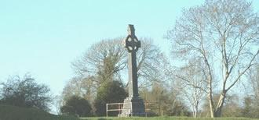
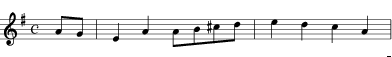

Cath Eachroma
Battle of Aughrim (12th July 1691)
La Bataille d'Aughrim (12 juillet 1691)
|
To the tune:
"The piece is descriptive of the last great defeat of the native Gaelic army in Ireland, on July 12th, 1691, following the defeat of the Stuart forces at the Battle of the Boyne. Aughrim is located near Ballinasloe, County Galway, about 30 miles from Galway city, and is a small village. It could be another expansion/contraction of the central musical motifs of the old ballad air "The Boyne Water" (Cowdery, 1990)." 1° The oldest printed reference quoted in Andrew Kuntz "Fiddler's Companion" is the Irish (?) March in the Dorian Mode found in Geoghegan’s "Compleat Tutor for the Pastoral or New Bagpipes", titled “A Bagpipe Concerto call’d the Battle of Aughrim, or the Football March.” c. 1745 - 46. Pg. 27. 2° A (fairly remote) variation of the foregoing tune (March 2/4 time, Dorian) is published, under the title "Cath Eachroma" , in Walker’s "Historical Memoirs of the Irish Bards", in London, in 1786. In his "Waifs and Strays of Gaelic Melody", 1922, O'Neill writes: “To the musical antiquary war cries and battle pieces may not be without interest. To the modern ear they possess but little attraction; yet when Martin O'Reilly, the blind piper from Galway, at the Dublin feis in 1901 played a descriptive selection entitled "The Battle of Aughrim 1691" in which the blare of trumpets, battle onslaught, and wailing of the women were imitated, his performance was rapturously applauded." Nearly identical is the Scottish reel "Loch Torridon" collected under N°185, in the "Scottish Dance Archives - Donald Collection" (Central Library Edinburgh). 3° The most frequently found version of the tune (still farther remote from the version N°1!) is titled “Lament for the Battle of Aughrim” . The second strain of it was borrowed for the Québécois tune “En fumant ma pipe.” The interesting bagpipe rendering N°3.2 was found on the site "Breizh Partition" 4° A variant of the previous tune is titled "The return from Fingal" (Irish, "An Casad Ua Fine-Gall"), an Irish air or march to be found in O’Neill's "Music of Ireland" (1903), under No. 1816. O’Neill (1913) states this air was learned by the Irish collector Dr. Petrie from the playing of Munster pipers, and was supposed to have been the march played or sung by Brian Boru’s Munster troops on their return home from their triumph over the Danes at Clontarf (another name for "Fingal") in 1014, in which Boru was killed. Sources: Part of the information above was provided by a kind contributor from Italy, most of the rest, as usual from "The Fiddler's Companion" (cf. Links). |
 Tune - Mélodie N°1 "A Bagpipe Concerto call'd The Battle of Aughrim" or " The Football March " from Geoghegan's "Compleat Tutor for the Pastoral or New Bagpipes", p. 16 (c. 1745) Tune - Mélodie N°2 Irish March " Cath Eachroma " from the Appendix to Walker’s "Historical Memoirs of the Irish Bards" (London, 1786) or "Loch Toridon" Tune - Mélodie N°3 March (2/4 time) "The Battle of Aughrim" Sound background to the present page Tune - Mélodie N°4 March " The Return from Fingal " from O’Neill's "Music of Ireland" (1903) Tunes sequenced by Ch.Souchon Tune - Mélodie N°3 bis March "The Battle of Aughrim", A Pipe version from the site "Breizh Partitions"  Basic theme of the "Battle of Aughrim" tunes Sheet music - Partition (tune N°3) |
A propos de la mélodie:
"Ce morceau décrit la grand défaite de l'armée irlandaise contre les Anglais le 12 juillet 1691. Elle fait suite à la défaite des forces de Jacques II Stuart à la bataille de la Boyne. Aughrim est situé non loin de Ballinasloe, Comté de Galway, à environ 50 km de Galway. C'est un petit village. Ce pourrait être une des nombreuses variations (raccourci ou développement) de l'air de l'ancienne ballade "Les eaux de la Boyne" (Cowdery, 1990)." 1° La plus ancienne version imprimée citée par le "Fiddler's Companion" est la marche irlandaise (?) en mode dorien qui figure chez Geoghegan, dans son "Manuel complet de la cornemuse pastorale dite 'nouvelle cornemuse'". C'est le "Concerto pour cornemuse "Bataille d'Aughrim" ou "Marche du ballon" , vers 1745 - N°46, pg.27. 2° Une variante (assez éloignée) de l'air précédent (marche 2/4 temps, mode Dorien) fut publiée, sous le titre "Cath Eachroma" , par Walker, à Londres, en 1786, dans ses "Mémoires historiques des anciens bardes irlandais". Dans ses "Enfants abandonnés de la mélodie gaélique" (1922), O'Neill écrit. "Ce morceau plaira aux amateurs d'airs martiaux. L'auditeur moderne n'y trouvera souvent que peu d'intérêt. Pourtant, lorsque Martin O'Reilly, le sonneur aveugle de Galway, joua aux "feis" de Dublin en 1901, la suite descriptive intitulée "La bataille d'Aughrim de 1691", où sont imités sonneries de clairons, cliquetis des armes et lamentations des femmes, il déchaîna des tonnerres d'applaudissements." Le reel écossais "Loch Torridon" qui porte le n°185 dans les "Archives de danse écossaise" de la collection Donald (Central Library Edinburgh) est presque identique. 3° La version de ce morceau la plus souvent citée (encore plus éloignée de l'air N°1) est intitulée "Lamentation sur la bataille d'Aughrim" . La seconde partie se retrouve dans l'air québécois "En fumant ma pipe" . L'intéressante transcription pour la cornemuse de cette mélodie provient du site "Breizh Partition". 4° Une variante de l'air précédent s'intitule "Le retour de Fingal" (en irlandais, "An Casad Ua Fine-Gall"), que l'on trouve, sous le N°1816 dans le recueil d'O'Neill, "Musique d'Irlande". O Neill (en 1913) indique qu'il le tient du collecteur irlandais, le Dr Petrie qui l'a recueilli auprès de sonneurs du Munster. On dit que ce serait la marche jouée ou chantée par les soldats de Brian Boru à son retour de sa campagne victorieuse contre les Danois à Clontarf (autre nom de Fingal) en 1014, où Boru perdit la vie. Sources: Une partie des informations ci-dessus a été communiquée par un aimable contributeur italien. Quant au reste, il provient essentiellement du "Fiddler's Companion" d'Andrew Kuntz (cf. liens). |


{kind=link}